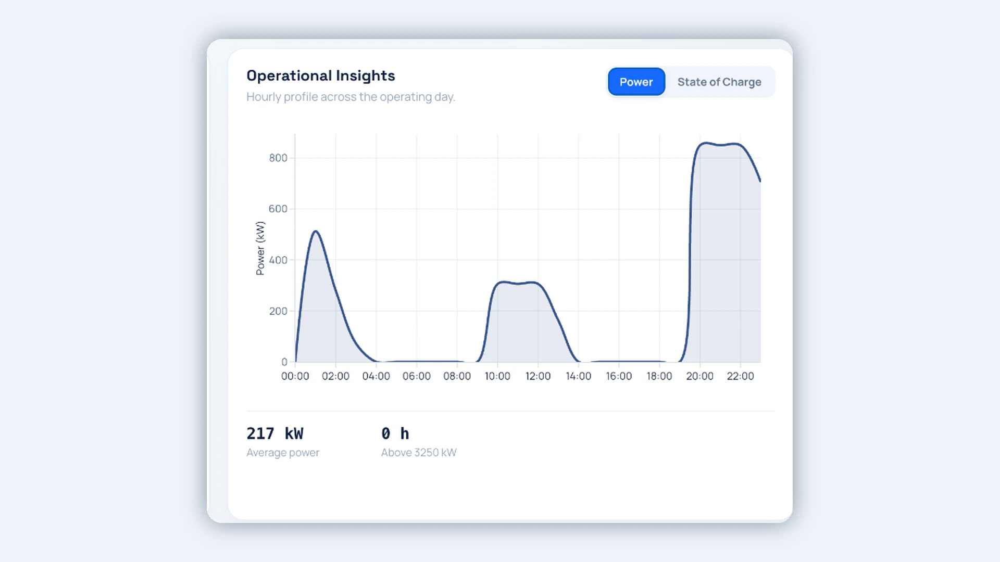

Électrifiez votre flotte sans improviser
Nextdriv est un logiciel d'aide à la décision pour les sociétés de transport, les municipalités et les exploitants de flottes. Simulez vos trajets réels, dimensionnez véhicules et bornes, et optimisez la recharge quotidienne avec vos données d'exploitation.
Une entreprise dérivée de l'Université McGill · Méthodes publiées dans Applied Energy, Energy et IEEE Access


Interface illustrative de la plateforme avec données de démonstration.